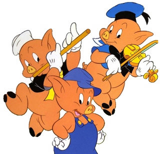

Perspektywa...
ma znaczenie
:)


Domeny


Bounded Context
Fairy tales

|
 |
| Mama |
| Dom |
| Wilk |
EventStorming!
- Złota zasada: zdarzenia (czasowniki, czas przeszły, dokonany), a NIE
struktury danych (rzeczowniki)
- Big Picture ES - znajdowanie domen
- Process-Level ES - odkrywanie Bounded Contextów
- Design-Level ES - taktyczne DDD w obrębie BC
- Komendy (zmiana stanu systemu) i widoki
- Obecność na miejscu
- Zaangażowanie kluczowych osób
- 2 dni, odcinka od świata
Klocki DDD

Specification, Policy
Kod

Jaki agregat w Trzech małych świnkach?
Założenia, biznes
- Budowanie domu: słoma, drewno, cegły
- Zdmuchnięcie domu przez wilka => ucieczka świnki do sąsiada
- Rezygnacja po 2 nieudanych próbach zdmuchnięcia domu
- Wyciąganie wniosków i nauka na błędach
-
Pominięte:
- Mama świnek
- Wchodzenie przez komin
- Zjadanie świnek
Big Picture
Design-Level
Clean Architecture


User Story/Command
- As a user, I want to get to know a fairy tale, so
that I can tell it to
others
-
As a pig, I want to build a house, so that it fulfills my requirements
-
Dokumentowanie i utrwalanie informacji
-
As a pig, I want to visit my neighbor
-
As a pig, I want to share my knowledge with my roommates
-
As a wolf, I want to blow the pig's house down, so that I can catch the pig
- Rejestr - z tym domem już próbowano
Dzięki!